Schede di lettura
Testo informativo con spazi vuoti e banca delle parole, comprensione all'ascolto con codice QR (audio gratuito) e crucipuzzle, con soluzioni.
1.951 materiali
Tema
Classe

Cartolina postale – Scheda: testo con spazi vuoti, comprensione all'ascolto e crucipuzzle

Carovana – Scheda: testo con spazi vuoti, comprensione all'ascolto e crucipuzzle

Canton Uri – Scheda: testo con spazi vuoti, comprensione all'ascolto e crucipuzzle

Canton Turgovia – Scheda: testo con spazi vuoti, comprensione all'ascolto e crucipuzzle

Canton Grigioni – Scheda: testo con spazi vuoti, comprensione all'ascolto e crucipuzzle

Canti di Ossian – Scheda: testo con spazi vuoti, comprensione all'ascolto e crucipuzzle

Camuffamento – Scheda: testo con spazi vuoti, comprensione all'ascolto e crucipuzzle

Californio – Scheda: testo con spazi vuoti, comprensione all'ascolto e crucipuzzle

Calendario – Scheda: testo con spazi vuoti, comprensione all'ascolto e crucipuzzle

Bulgaria – Scheda: testo con spazi vuoti, comprensione all'ascolto e crucipuzzle

Bruxelles – Scheda: testo con spazi vuoti, comprensione all'ascolto e crucipuzzle

Bronchite – Scheda: testo con spazi vuoti, comprensione all'ascolto e crucipuzzle

Bromo – Scheda: testo con spazi vuoti, comprensione all'ascolto e crucipuzzle

Branchia – Scheda: testo con spazi vuoti, comprensione all'ascolto e crucipuzzle

Bracconaggio – Scheda: testo con spazi vuoti, comprensione all'ascolto e crucipuzzle

Bovini – Scheda: testo con spazi vuoti, comprensione all'ascolto e crucipuzzle

Bosnia ed Erzegovina – Scheda: testo con spazi vuoti, comprensione all'ascolto e crucipuzzle

Boro – Scheda: testo con spazi vuoti, comprensione all'ascolto e crucipuzzle

Blatt – Scheda: testo con spazi vuoti, comprensione all'ascolto e crucipuzzle

Bivalvia – Scheda: testo con spazi vuoti, comprensione all'ascolto e crucipuzzle
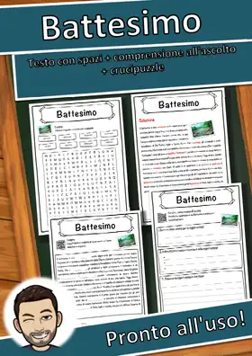
Battesimo – Scheda: testo con spazi vuoti, comprensione all'ascolto e crucipuzzle

Batomorphi – Scheda: testo con spazi vuoti, comprensione all'ascolto e crucipuzzle
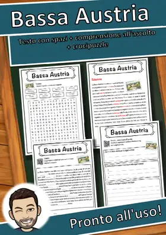
Bassa Austria – Scheda: testo con spazi vuoti, comprensione all'ascolto e crucipuzzle
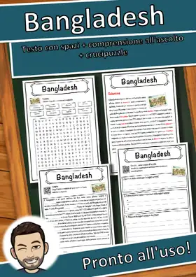
Bangladesh – Scheda: testo con spazi vuoti, comprensione all'ascolto e crucipuzzle
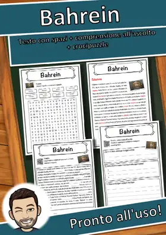
Bahrein – Scheda: testo con spazi vuoti, comprensione all'ascolto e crucipuzzle
Bad – Scheda: testo con spazi vuoti, comprensione all'ascolto e crucipuzzle
Bacteria – Scheda: testo con spazi vuoti, comprensione all'ascolto e crucipuzzle
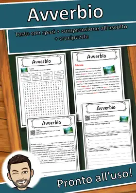
Avverbio – Scheda: testo con spazi vuoti, comprensione all'ascolto e crucipuzzle
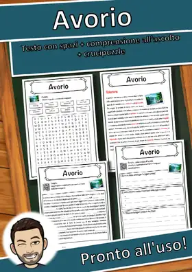
Avorio – Scheda: testo con spazi vuoti, comprensione all'ascolto e crucipuzzle

Aves – Scheda: testo con spazi vuoti, comprensione all'ascolto e crucipuzzle
Asse terrestre – Scheda: testo con spazi vuoti, comprensione all'ascolto e crucipuzzle
Arsenico – Scheda: testo con spazi vuoti, comprensione all'ascolto e crucipuzzle
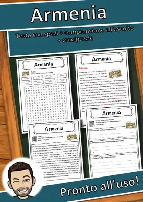
Armenia – Scheda: testo con spazi vuoti, comprensione all'ascolto e crucipuzzle
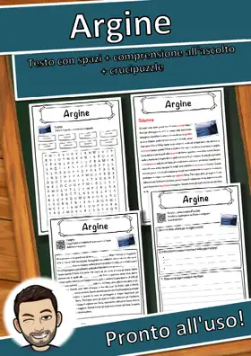
Argine – Scheda: testo con spazi vuoti, comprensione all'ascolto e crucipuzzle
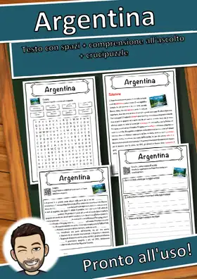
Argentina – Scheda: testo con spazi vuoti, comprensione all'ascolto e crucipuzzle
Architettura – Scheda: testo con spazi vuoti, comprensione all'ascolto e crucipuzzle
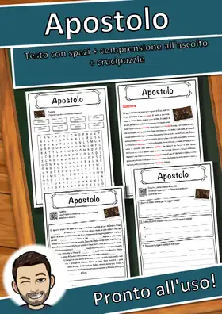
Apostolo – Scheda: testo con spazi vuoti, comprensione all'ascolto e crucipuzzle
Antimonio – Scheda: testo con spazi vuoti, comprensione all'ascolto e crucipuzzle
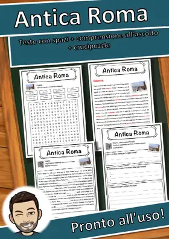
Antica Roma – Scheda: testo con spazi vuoti, comprensione all'ascolto e crucipuzzle
Antenna – Scheda: testo con spazi vuoti, comprensione all'ascolto e crucipuzzle
Anno bisestile – Scheda: testo con spazi vuoti, comprensione all'ascolto e crucipuzzle
Annibale – Scheda: testo con spazi vuoti, comprensione all'ascolto e crucipuzzle
Anglosassoni – Scheda: testo con spazi vuoti, comprensione all'ascolto e crucipuzzle
Anatinae – Scheda: testo con spazi vuoti, comprensione all'ascolto e crucipuzzle
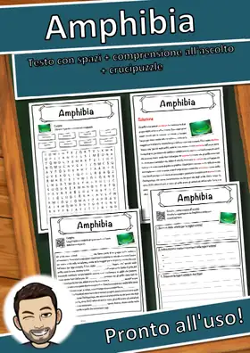
Amphibia – Scheda: testo con spazi vuoti, comprensione all'ascolto e crucipuzzle
Amore – Scheda: testo con spazi vuoti, comprensione all'ascolto e crucipuzzle
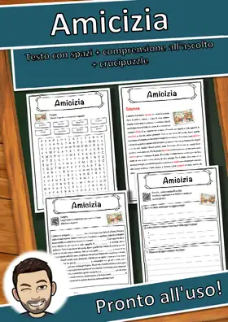
Amicizia – Scheda: testo con spazi vuoti, comprensione all'ascolto e crucipuzzle
America Latina – Scheda: testo con spazi vuoti, comprensione all'ascolto e crucipuzzle
Nessun materiale trovato: prova con un'altra parola o un altro filtro.